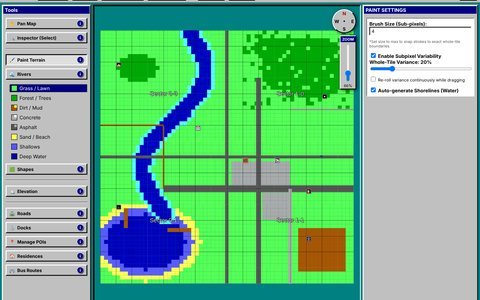
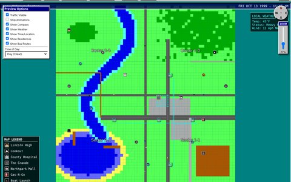
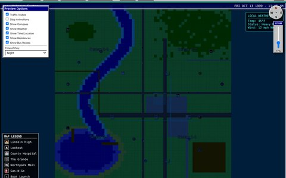
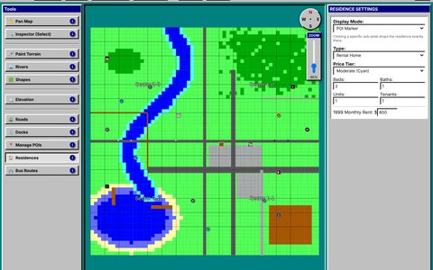
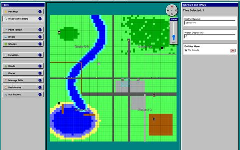
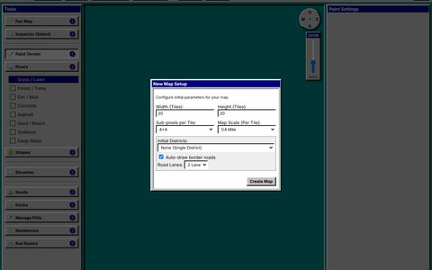

Tool · HTML / JavaScript
Atlasworks
Lay out a whole town, then watch it run.
Atlasworks is a town-map editor with a Windows 95 look and a 16-color EGA palette. You lay a town out on a grid of tiles: paint the ground, wind a river through it, raise hills, lay roads with real lane counts and speed limits, and drop in the places, homes, and bus stops that make it a town. Then switch to Preview mode and the map comes alive, with traffic on the roads, a clock, the weather, and a legend of everywhere worth going.
I first built it inside Midnight at the Multiplex, for the town the player travels across between locations (each building's inside is built in a separate editor). It has since moved out into its own standalone tool.
Everything runs in your browser; nothing is sent anywhere. Export File downloads your map as a JSON file.
Try it
This is the working tool. Pick a size in the New Map Setup box (try splitting the town into districts with border roads) and press Create Map; a short tour shows you around. Paint some water, drag out a road, place a few points of interest, then press Preview Mode to see it run.
Tip: Atlasworks is made for a mouse and a big screen (drag to paint, scroll to zoom). The full-screen version has the most room.
What it does
- New Map Setup: choose the grid size (5 to 50 tiles each way), how finely each tile can be painted (1×1 up to 12×12 sub-pixels), and how much ground one tile covers (1/8 mile up to 2 miles). Optionally split the town into up to 36 districts and draw roads along their borders automatically.
- Terrain: paint grass, forest, dirt, concrete, asphalt, sand, shallows, and deep water, with an adjustable brush, a little random color variety on whole-tile strokes, and beaches that form on their own wherever water meets land. Shapes draws rectangles and ovals, filled or outlined, as terrain or as a separate overlay layer.
- Rivers, docks, and hills: draw winding rivers with sandbars along their banks, walkable wooden docks over deep water, and raise or lower the ground so peaks show brighter and valleys darker.
- Roads and traffic: roads snap to tile edges and carry 1 to 7 lanes, a surface (asphalt, concrete, dirt, or gravel), a speed limit, and a traffic volume. They're drawn wider or narrower to match the map's scale. Paint water over a road and Atlasworks asks whether to turn it into a bridge or erase it.
- Places and homes: points of interest with a name, description, icon, and size (quick presets for bus stops, gas stations, hospitals, and shops), plus “quest” markers that flash for attention. Residences carry a type (owned house, parents' house, apartment, or rental), a color-coded price tier, beds, baths, units, and tenants, and a suggested 1999 monthly rent.
- Bus routes: name a route and click near the roads to place its stops; each stop snaps to the nearest road.
- Inspector: click a tile or road to see and edit what's there; Shift-click to select several; drag places and homes to move them. Undo and Redo cover every change.
- Preview mode: the map as a player would see it: animated traffic, a date-and-time bar, local weather, a compass, a legend of every place on the map, morning, day, evening, and night lighting, and switches to show or hide homes and bus routes. A song can play while you look, with fade-in and fade-out.
Screenshots
All of these show one sample town, “Lakeside,” built in Atlasworks: a lake and a winding river, a downtown, the fairgrounds, and the Grande, the movie theater from Midnight at the Multiplex.












How it's built
The whole tool is one HTML file with no libraries and no build step, so it opens straight from a folder, offline, or from any web server. The map is drawn with ordinary page elements rather than a canvas: every tile is split into sub-pixels that can each be painted, and roads, places, and traffic sit on layers above them. Traffic follows the road network the tool builds as you draw. The editor's look is Windows 95-style beveled panels and the 16 EGA colors, to match the 1999 setting of the game it was made for.